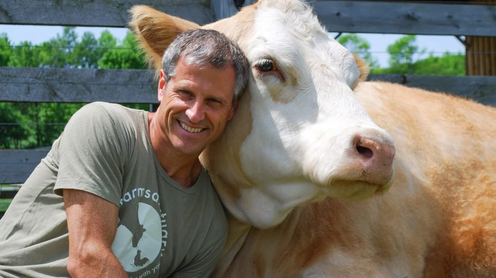

Our Story
Founded in 2010, Gau Seva Hub began as a humble shelter for 10 abandoned cows. Over the years, we have grown to accommodate over 350 cows, providing them with proper medical care, shelter, and nourishment.
Our goal is to spread awareness about cow protection, ethical farming, and sustainable agricultural practices. Through partnerships with local farmers and animal welfare organizations, we have expanded our reach to thousands of people.
